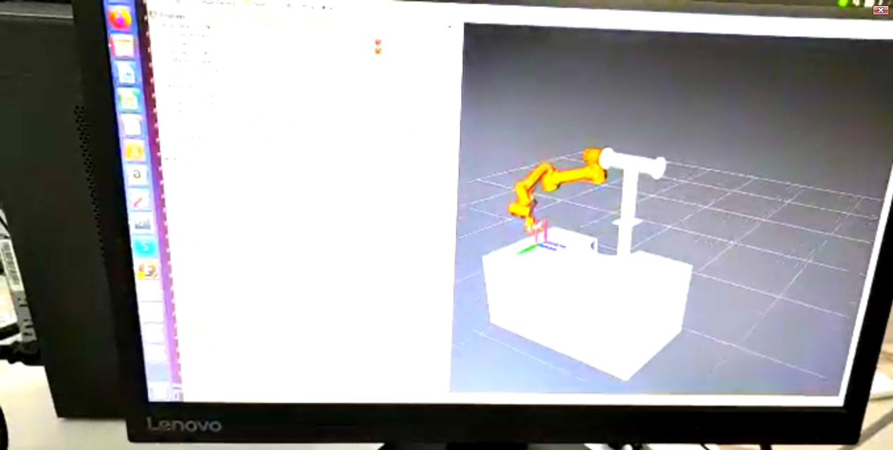
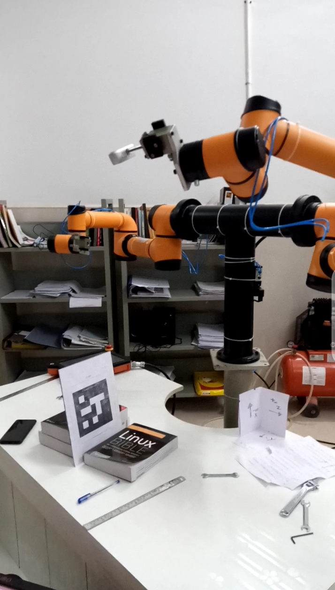
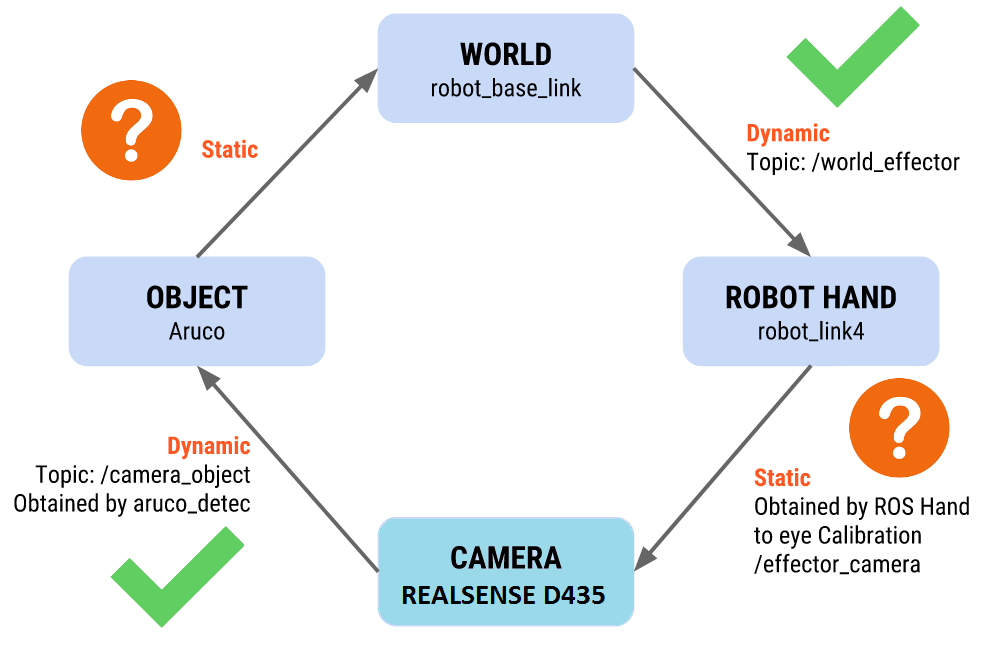
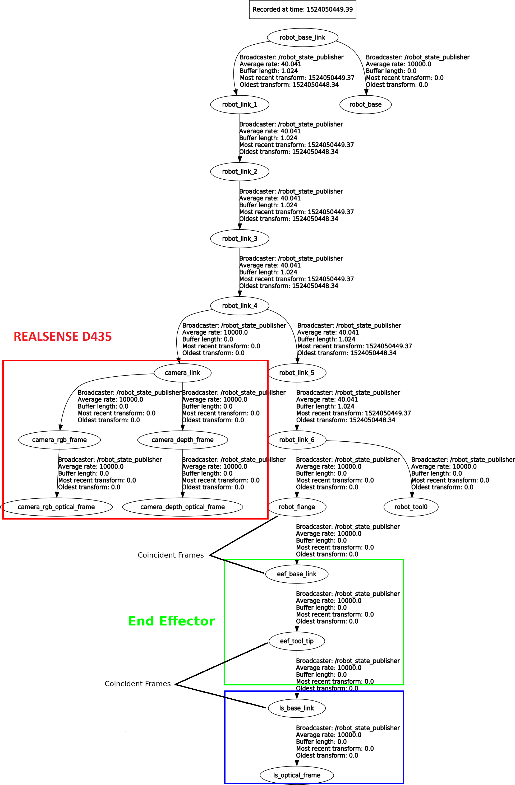
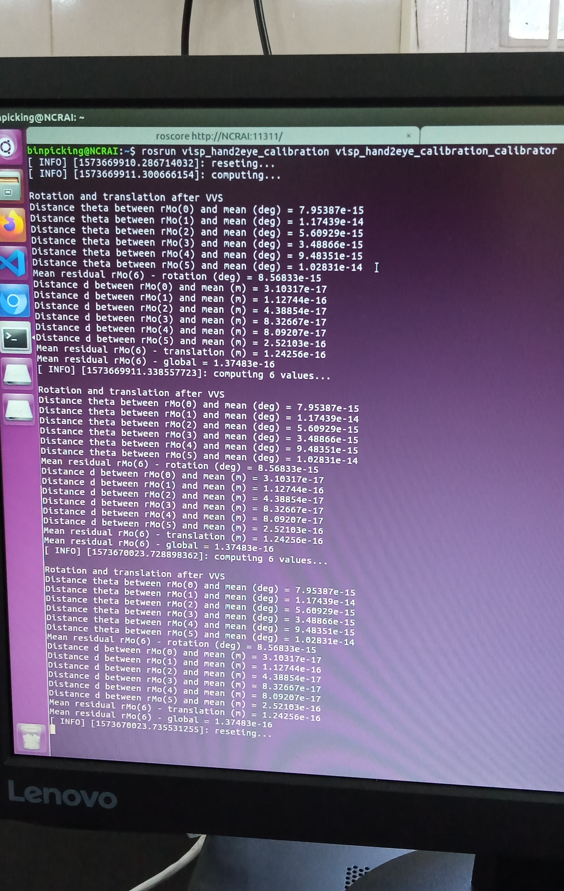
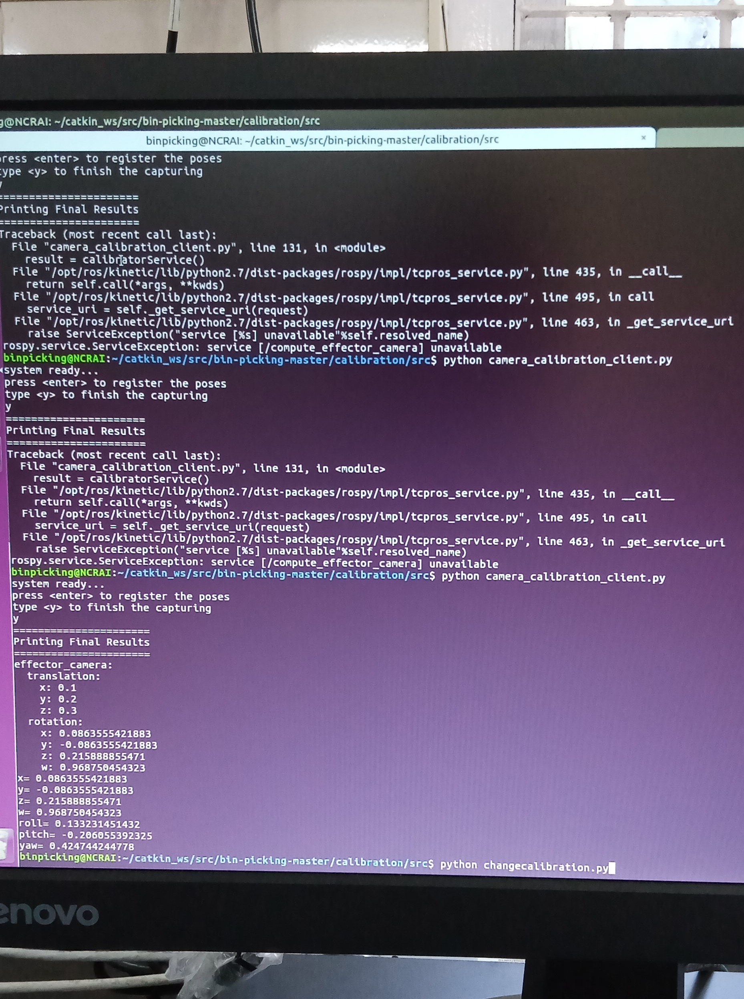

The calibration of the camera sensor was carried on with the determination of the transformation from the coordinate system of the centre of the gripper to the camera. The process of determining was redone with more precision, if the angle of the camera changes with the perpendicular movement of the robot's end effector. Afterwards the translation of the X,Y and Z was calculated. To calculate the exact diference from the tip of the gripper to the camera in the Z-axis, I gathered some readings from the camera when it is vertically pointing to the table. Thishelp in knowing the difference to the base of the robot. Then those were compared with the Z-coordinate of the end effector read in the RVIZ. After gathering data for different distances the average was calculated.

Having already the transformation the URDF was changed, by altering the binpicking_robot_macro.xacro file and adding the binpicking_gripper_macro.xacro, in order to incorporate the coordinate system of the sender of the laser sensor. The (.STL) file of the device was also included for a better visualization as shown above.
RealsenseThe calibration of the Realsense was my next step in this week. To do so the visp_hand2eye_calibration ROS package was used. This package is used to estimate the camera position with respect to its effector (the robot arm) using the ViSP library. To compute the relative transformation between the the camera and the hand it is necessary to fed the calibrator node with the /world_effector and the /camera_object transformations. This last one is calculated using an aruco and the aruco_detect package which detects the pose of aruco markers, and this process can be visualized in the picture below.

To use this package it is necessary to install the fiducial software from binary packages using the following command.
sudo apt-get install ros-kinetic-fiducials
This calibration process is easily visualized in the scheme bellow.

For this calibration to work, the creation of a client, which feeds different transformations to the calibrator responsible for computing the relative transformation between the the camera and the hand from a few poses, is fundamental. The camera_calibration_client.py program, present in the calibration file, is responsible for executing this process and printing the /effector_camera transformation in the xyz(transformation) and rpy(rotation) format. With this it is possible to visualize the tree of the transformations of the entire system.

In order to visualize the robot, realsense and all the associated coordinate systems, the URDF model of the entire system was changed, by altering the binpicking_macro.xacro file to incorporate the Realsense. All the components can be visualized and analysed live by running the next command.
roslaunch binpicking_system global_state_visualize.launch
The obtained caliberation results are as follows:
 